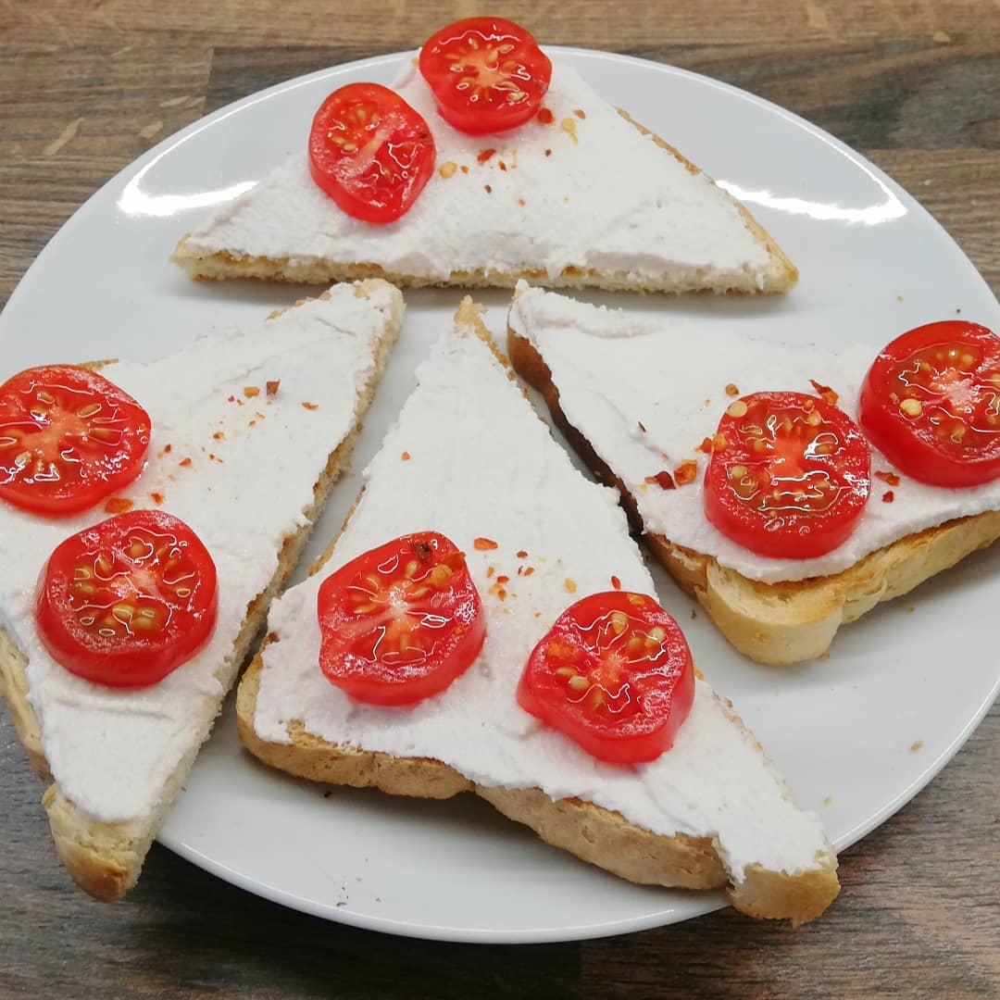

😋 ŠUNKOVÁ PĚNA 😋
---
Tousty se šunkovou pěnou jsou raz dva hotové 😉
Na pěnu jsem použila krůtí šunku a tvaroh.
Hotovou pěnu jsem namazala na opečené tousty , dozdobila cherry rajčátky.
A trochou rozdrcené sušené chilli papričky se taky nic nezkazí😉🌶️😋
---
#martincinodomacikuchteni #domacivareni #sunkovapena #krutisunka #tvaroh #homecooking #hammousse #turkeyham